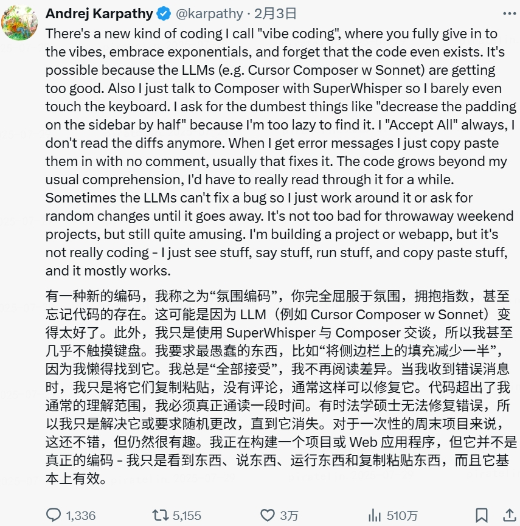
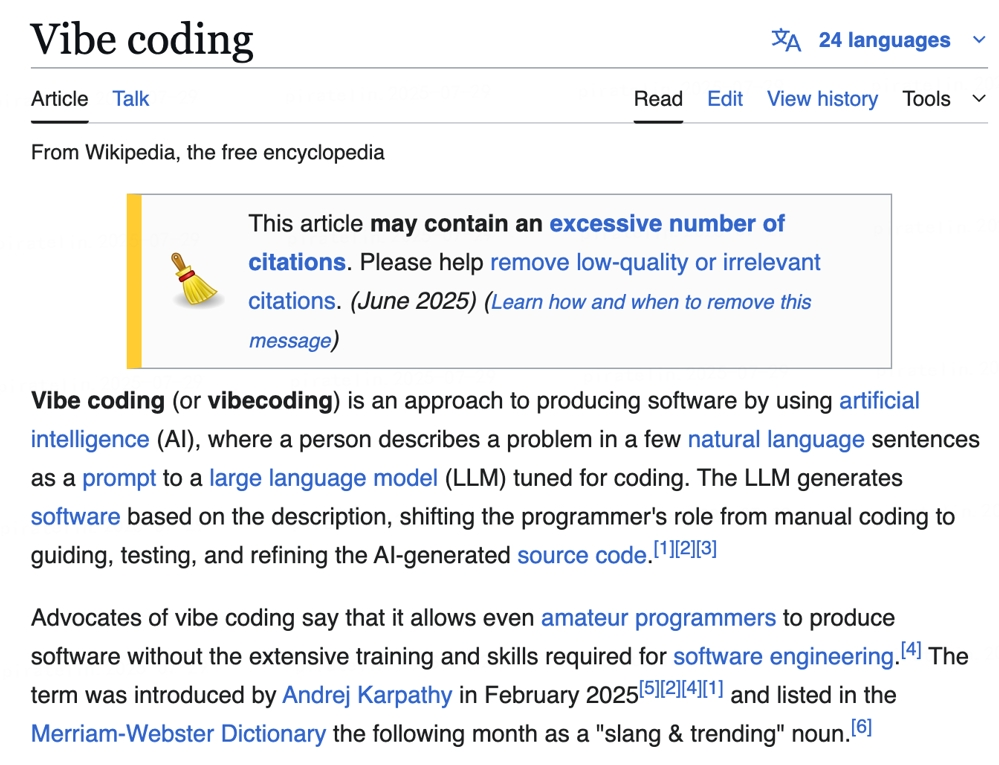

Vibe Coding 概念起源

相关资料与文档

AI 时代的氛围编程范式
产品经理提效新范式：用自然语言驱动AI实现产品开发，专注创意与目标，让AI处理技术细节。
概念起源与相关资料展示
一种全新的编程范式及其为产品经理带来的优势
核心思想是，开发者只需通过自然语言向 AI 清晰地传达产品的核心目标和期望的“感觉”或“氛围” (Vibe)，而无需关心具体的代码实现。
"Just vibe. Let the AI do the boring stuff."
— 你只管感受，琐碎交给 AI
这种范式极大地降低了技术门槛，特别适合快速验证产品想法 (MVP)，让创意能够被迅速地转化为可交互的原型。
直接用大白话描述需求，极大降低沟通成本。
无需学习复杂编程语言，更专注于业务价值。
几分钟内生成原型，大幅缩短开发周期。
通过多轮对话持续完善功能，精准实现愿景。
AI能辅助排查问题，自动修复简单bug。
AI的实现能力可能超出你的想象，探索创新。
全局概览与个人精选
| 类别 | 说明 | 代表工具 |
|---|---|---|
| 对话产品 | 用户通过自然语言与 AI 对话式协作，生成软件或应用 | Lovable, v0, Bolt |
| 异步Coding Agent | 7×24 小时运行的 AI 程序员，能自主完成编程任务 | OpenAI Codex, Devin, SWE-agent |
| IDE插件 | 集成在开发环境中，为开发者提供实时编程辅助 | Cursor, GitHub Copilot, Cline, Trae |
| 命令行工具 CLI | 基于本地终端的命令行工具，执行自动化编码任务 | Claude Code, Aider, gemini-cli |
| 阶段 | 工具推荐 | 简要说明 |
|---|---|---|
| 需求讨论 | ChatGPT / Claude / Gemini | 头脑风暴、逻辑推演 |
| 写 PRD 文档 | Gemini 2.5 Pro | 自动转写、格式化 |
| 开发与测试 | Trae（强推） | 支持多模型 + 项目管理，一站式氛围编程 |
真实项目展示：从想法到产品的完整实现
使用Vibe Coding快速生成多个产品的HTML汇报材料，实现统一的视觉风格和交互体验。
票据业务有一张超级大Excel表从数据导出到OA，线下跟交易对手沟通，如果交易对手想购买，那么就给交易ID即可。业务根据交易ID去大表中获取对应的全量信息，再生成交易表，统一发送给外包同学录入Fex平台。
根据交易ID手动整理交易表，大量的查找和复制粘帖工作
使用Vibe Coding编写Python脚本，直接替代人工操作，实现Excel数据的自动化处理和交易表生成。
基于实践经验总结的高效使用技巧
用清晰、具体的语言描述你想要的功能，避免模糊表达。
将复杂功能拆分成小步骤，逐步完善，避免一次性要求过多。
给出具体的使用场景和期望的输入输出示例，帮助AI理解。
每完成一个功能模块就立即测试，发现问题及时反馈调整。
AI可能需要多轮对话才能完全理解需求，保持耐心持续优化。
掌握如何向AI提出有效问题，获得更准确的解决方案。
要求AI添加详细注释，方便后续维护和理解代码逻辑。
确保AI考虑异常情况和错误处理，提高代码的健壮性。
养成保存不同版本的习惯，便于回滚和比较不同方案。
总结每次使用经验，不断优化与AI协作的方式和效率。
会说话，就能写代码。你不需要任何技术背景，只需要一个想法，AI 就能帮你把它变成现实。